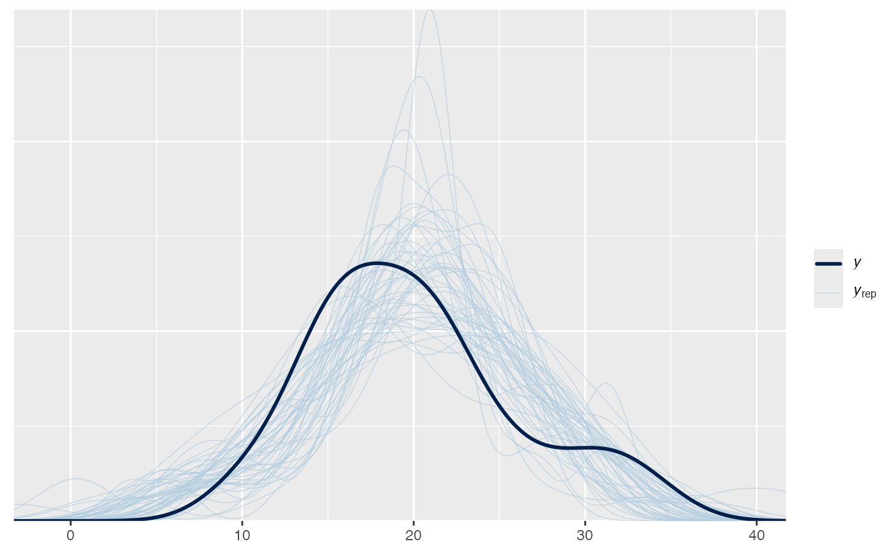
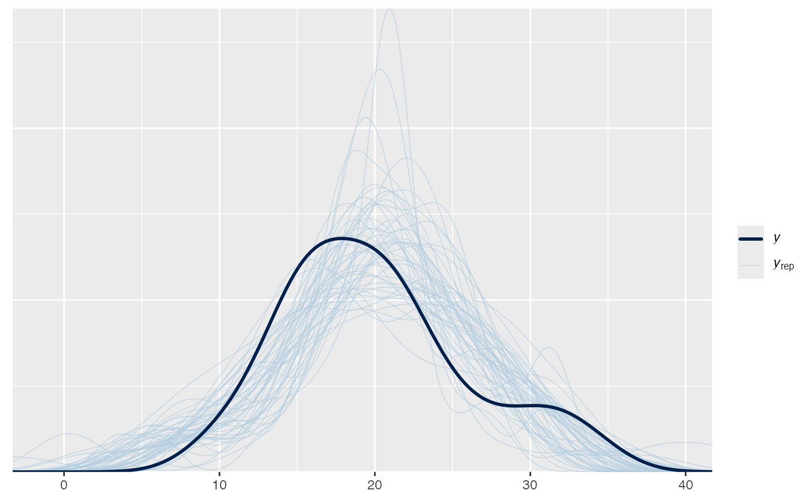
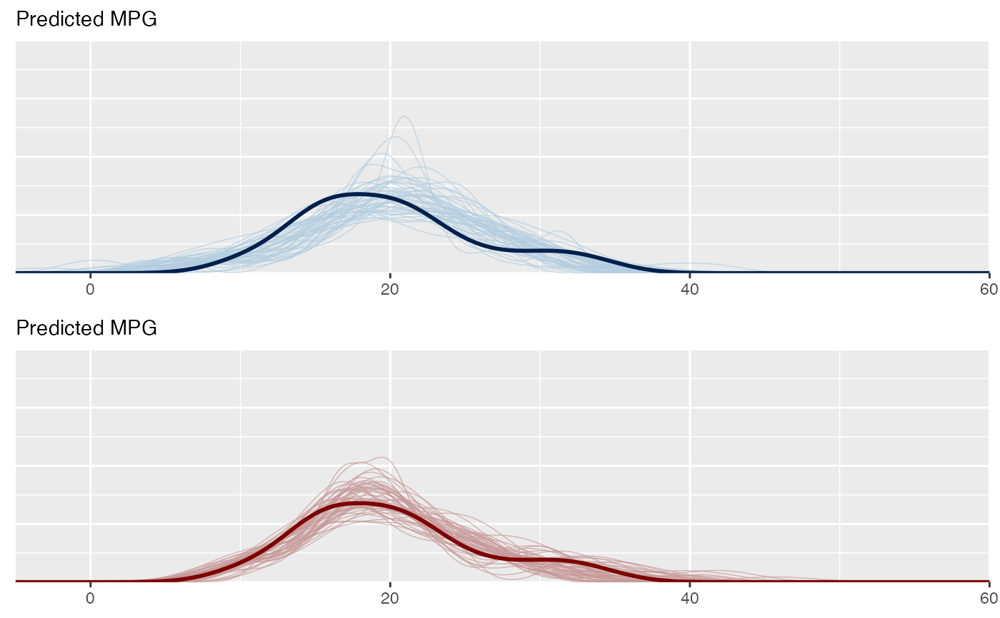
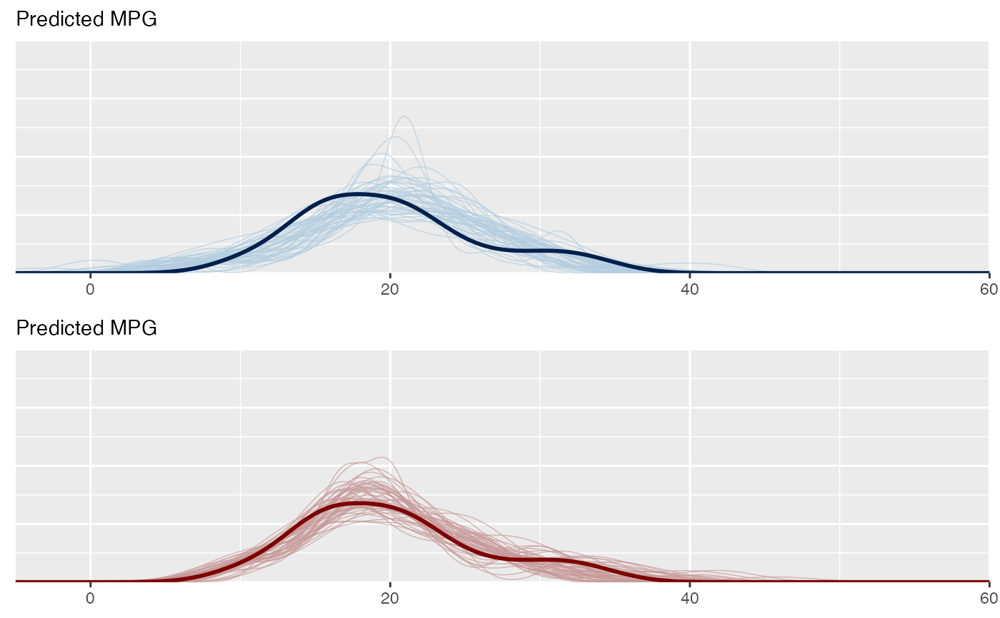

The bayesplot_grid function makes it simple to juxtapose plots using
common \(x\) and/or \(y\) axes.
Arguments
- ...
One or more ggplot objects.
- plots
A list of ggplot objects. Can be used as an alternative to specifying plot objects via
....- xlim, ylim
Optionally, numeric vectors of length 2 specifying lower and upper limits for the axes that will be shared across all plots.
- grid_args
An optional named list of arguments to pass to
gridExtra::arrangeGrob()(nrow,ncol,widths, etc.).- titles, subtitles
Optional character vectors of plot titles and subtitles. If specified,
titlesandsubtitlesmust must have length equal to the number of plots specified.- legends
If any of the plots have legends should they be displayed? Defaults to
TRUE.- save_gg_objects
If
TRUE, the default, then the ggplot objects specified in...or via theplotsargument are saved in a list in the"bayesplots"component of the returned object. Setting this toFALSEwill make the returned object smaller but these individual plot objects will not be available.
Value
An object of class "bayesplot_grid" (essentially a gtable object
from gridExtra::arrangeGrob()), which has a plot method.
Examples
y <- example_y_data()
yrep <- example_yrep_draws()
stats <- c("sd", "median", "max", "min")
color_scheme_set("pink")
bayesplot_grid(
plots = lapply(stats, function(s) ppc_stat(y, yrep, stat = s)),
titles = stats,
legends = FALSE,
grid_args = list(ncol = 1)
)
#> `stat_bin()` using `bins = 30`. Pick better value with `binwidth`.
#> `stat_bin()` using `bins = 30`. Pick better value with `binwidth`.
#> `stat_bin()` using `bins = 30`. Pick better value with `binwidth`.
#> `stat_bin()` using `bins = 30`. Pick better value with `binwidth`.
 # \dontrun{
library(rstanarm)
mtcars$log_mpg <- log(mtcars$mpg)
fit1 <- stan_glm(mpg ~ wt, data = mtcars, refresh = 0)
fit2 <- stan_glm(log_mpg ~ wt, data = mtcars, refresh = 0)
y <- mtcars$mpg
yrep1 <- posterior_predict(fit1, draws = 50)
yrep2 <- posterior_predict(fit2, fun = exp, draws = 50)
color_scheme_set("blue")
ppc1 <- ppc_dens_overlay(y, yrep1)
ppc1

ppc1 + yaxis_text()
# \dontrun{
library(rstanarm)
mtcars$log_mpg <- log(mtcars$mpg)
fit1 <- stan_glm(mpg ~ wt, data = mtcars, refresh = 0)
fit2 <- stan_glm(log_mpg ~ wt, data = mtcars, refresh = 0)
y <- mtcars$mpg
yrep1 <- posterior_predict(fit1, draws = 50)
yrep2 <- posterior_predict(fit2, fun = exp, draws = 50)
color_scheme_set("blue")
ppc1 <- ppc_dens_overlay(y, yrep1)
ppc1

ppc1 + yaxis_text()
 color_scheme_set("red")
ppc2 <- ppc_dens_overlay(y, yrep2)
bayesplot_grid(ppc1, ppc2)
# make sure the plots use the same limits for the axes
bayesplot_grid(ppc1, ppc2, xlim = c(-5, 60), ylim = c(0, 0.2))
color_scheme_set("red")
ppc2 <- ppc_dens_overlay(y, yrep2)
bayesplot_grid(ppc1, ppc2)
# make sure the plots use the same limits for the axes
bayesplot_grid(ppc1, ppc2, xlim = c(-5, 60), ylim = c(0, 0.2))
 # remove the legends and add text
bayesplot_grid(ppc1, ppc2, xlim = c(-5, 60), ylim = c(0, 0.2),
legends = FALSE, subtitles = rep("Predicted MPG", 2))

# }
# remove the legends and add text
bayesplot_grid(ppc1, ppc2, xlim = c(-5, 60), ylim = c(0, 0.2),
legends = FALSE, subtitles = rep("Predicted MPG", 2))

# }